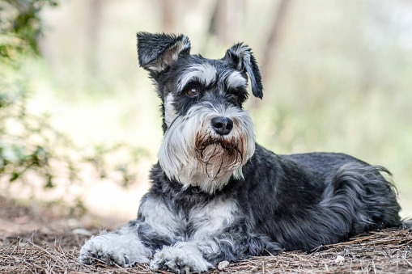
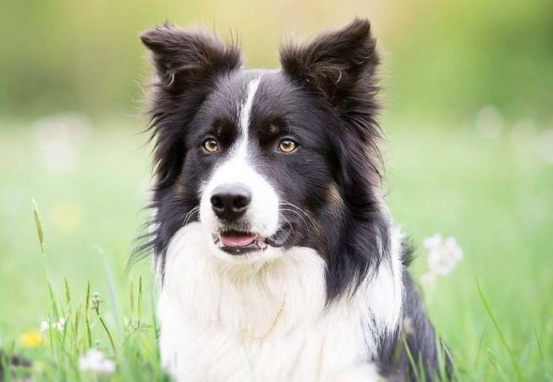
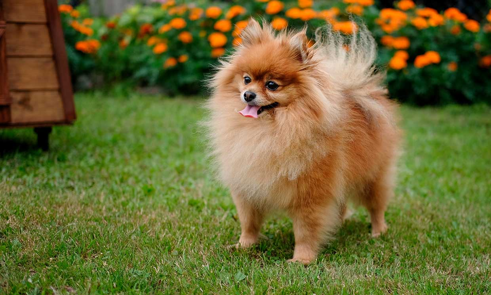
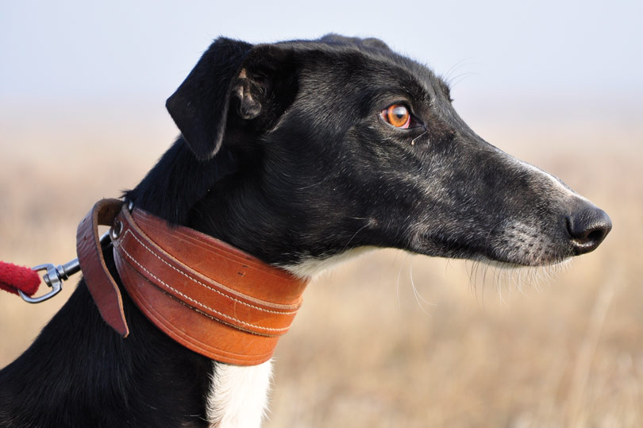

| Tabla De Perros | ||
| RAZA | FOTO PERRO | ENLACE WIKIPEDIA |
| Pug | https://es.wikipedia.org/wiki/Pug | |
| Beagle | https://es.wikipedia.org/wiki/Beagle | |
| Shiba Inu | https://es.wikipedia.org/wiki/Shiba_Inu | |
| Schnauzer |  | https://es.wikipedia.org/wiki/Schnauzer |
| Pastor Alemán | |
https://es.wikipedia.org/wiki/Pastor_aleman |
| Border Collie |  | https://es.wikipedia.org/wiki/Border_collie |
| Pomerania |  | https://es.wikipedia.org/wiki/Pomerania |
| Galgo |  | https://es.wikipedia.org/wiki/Galgo |